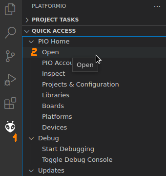
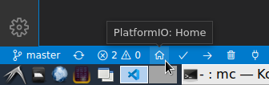
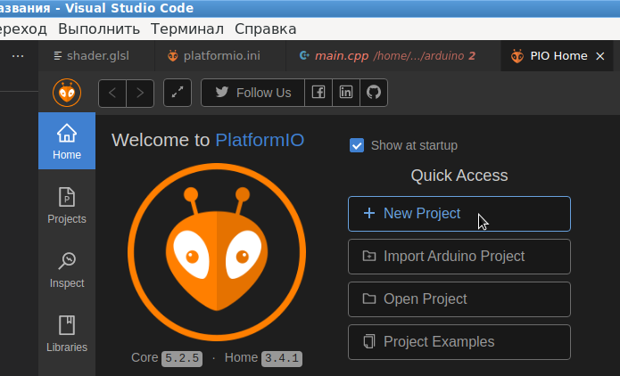

После долгих попыток настроить возможность работы с микроконтроллером STM32F103C8T6 в среде Qt Creator, и получив в конце концов очень неудобный и, можно сказать, неудовлетворительный результат, было решено попробовать другие свободные среды разработки. Здесь рассказывается о том, как настроить бесплатную IDE VS Code (Visual Studio Code) от компании Microsoft, распространяемую по открытой лицензии MIT.
Для контраста могу сказать, что для того, чтобы разобраться и настроить в Qt Creator возможность работать с микроконтроллером, у меня ушло более трех месяцев вечерних посиделок, в течении которых не раз опускались руки. И если бы я лично не знал человека, который смог настроить Qt Creator под похожий микроконтроллер, я бы считал эту задачу вообще невыполнимой. С VS Code удалось разобраться за два дня.
Пакеты Linux
Для установки и работы связки VS Code + PlatformIO необходимо, чтобы в системе были установлены следующие пакеты:
Не помешает так же наличие следующих пакетов:
Названия пакетов приведены для дистрибутива Debian Linux 11. В других дистрибутивах названия и состав пакетов может отличаться.
VS Code + PlatformIO
Легковестная (по меркам Microsoft, конечно) среда разработки VS Code имеет неплохую подсистему создания плагинов. И исторически так сложилось, что появилось сообщество разработчиков встраиваемых систем (embedded development), которые написали отличный плагин под названием PlatformIO. Это большой и развесистый плагин, который позволяет создать на основе VS Code среду разработки под микроконтроллеры. На момент написания этой статьи данный плагин поддерживает более тысячи плат с различными семействами микропроцессоров и контроллеров на борту.
Итак, VS Code можно взять с официального сайта:
https://code.visualstudio.com/download
Сразу предупрежу, что под Linux существуют сборки только под x86_64, если рабочая станция использует процессоры Intel или AMD. Надеюсь, 2022 году это не проблема.
Плагин PlatformIO устанавливается в разделе настроек плагинов:
Важно понимать, что такой режим установки возможен только при наличии доступа в Интернет на машине разработчика.
Установка PlatformIO без доступа в Интернет
Как установить данный плагин при отсутствии доступа в Интернет (некоторым разрабочикам это важно), пока непонятно. Возможно, помогут следующие ссылки:
https://platformio.org/install/ide?install=vscode
https://marketplace.visualstudio.com/items?itemName=platformio.platformio-ide
https://docs.platformio.org/en/latest//integration/ide/vscode.html#installation
На мысли наводит вот эта рекомендация:
Please note that you need to install a Git client if you are going to use Git for installing upstream development platforms, cloning external projects, installing library dependencies from a repository, etc.
То есть, для того, чтобы установился плагин PlatformIO, необходимо, чтобы на Linux-компьютере стоял Git-клиент. А это значит, что PlatformIO можно брать из официальных репозитариев на GtHub:
https://github.com/platformio
Вопрос только в том, какие конкретно проекты надо выкачивать, и как их подключать в VS Code.
Настройка openocd для китайской реплики STM32F103C8T6
Программа openocd - это надстройка над отладчиком GDB, которая используется, в частности, при подключении и отладке платы STM32F103C8T6 через ST-Link v.2 (SWD интерфейс). Именно через такой отладчик PlatformIO работает с платой.
Примерчание: проблема в том, что купить оригинальную плату STM32F103C8T6 (она же Blue Pill) - это достаточно нетривиальная задача. Раньше китайцы маркировали свои реплики как CS32F103C8T6, но с некоторого момента они стали писать STM32F103C8T6 прямо на чипах, которые на самом деле являются CS32F103C8T6. Такие платы имеют нестандатный idcode, и этим отличаются от оригинала.
Сервер отладки openocd в своей стандартной поставке не может работать с неоригинальными платами. Чтобы определить оргинальность, надо вставить в USB-порт компьютера плату STM32F103C8T6 через ST-Link v.2, и запустить команду:
openocd -f /usr/share/openocd/scripts/interface/stlink.cfg -f /usr/share/openocd/scripts/target/stm32f1x.cfg
Если команда выдаст ошибку:
Warn : UNEXPECTED idcode: 0x2ba01477
Error: expected 1 of 1: 0x1ba01477
Значит данная плата является китайской репликой. Многие разработчики говорят, что китайсткие реплики не так уж плохи, так что просто надо разобраться, как с ними работать.
Чтобы openocd нормально прделелял китайскую реплику, можно отредактировать файл /usr/share/openocd/scripts/target/stm32f1x.cfg. В начале этого файла, после директив source, необходимо добавить строку:
set CPUTAPID 0x2ba01477
После этого исправления, можно снова повторить запуск openocd. Если все настроено правильно, в консоль будет выдано примерно следующее:
Open On-Chip Debugger 0.11.0-rc2
Licensed under GNU GPL v2
For bug reports, read
http://openocd.org/doc/doxygen/bugs.html
Info : auto-selecting first available session transport "hla_swd". To override use 'transport select <transport>'.
Info : The selected transport took over low-level target control. The results might differ compared to plain JTAG/SWD
Info : Listening on port 6666 for tcl connections
Info : Listening on port 4444 for telnet connections
Info : clock speed 1000 kHz
Info : STLINK V2J39S7 (API v2) VID:PID 0483:3748
Info : Target voltage: 2.434086
Info : stm32f1x.cpu: hardware has 6 breakpoints, 4 watchpoints
Info : starting gdb server for stm32f1x.cpu on 3333
Info : Listening on port 3333 for gdb connections
Можно нажать Ctrl+C для завершения данного процесса отладки, запускать VS Code и приступать к созданию нового проекта.
Создание первого проекта в VS Code
Для доступа к стартовому экрану PolatformIO можно воспользоваться двумя путями.
Путь первый:

Путь второй:

Для создания нового проекта нажимается кнопка New Project:

Для простоты, первый проект можно сделать с использованием библиотек Arduino. Библиотеки Arduino существуют не только для AVR-контроллеров, но и портированы на ARM-контроллеры, что обеспечивает практически такой же стиль написания кода, как и под AVR.